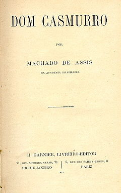

Dom Casmurro
Na qualidade de leitora do século XXI, deixo aqui minhas impressões sobre o romance Dom Casmurro, um dos livros mais conhecidos do célebre Machado de Assis.
A história é narrada por Bentinho que “vive só, com um criado”, e com o fim de “variar”, resolveu escrever um livro. Quando nos reportamos a esse romance nos vem o questionamento da traição, ou não, de Capitu. O texto é muito mais do que isso. Quem o ler, com o intuito de achar a resposta, poderá se frustrar.
Para continuar leitura acesse o link para blog